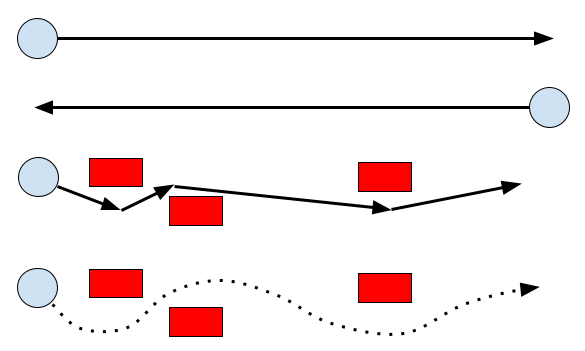

Day 3, Part A: Modifying The Environment¶
Learning goals¶
How to modify the Ant environment to accommodate new goals
How and why to subclass a class
Definitions¶
Simulation environment: Notice that this is not the same as the python/conda environment. The simulation environment is the simulated world where the reinforcement learning takes place. It provides opportunities for an agent to learn and explore, and ideally provides challenges that aid in efficient learning.
Agent (aka actor or policy): An entity in the simulation environment that performs actions. The agent could be a person, a robot, a car, a thermostat, etc.
State variable: An observed variable in the simulation environment. They can be coordinates of objects or entities, an amount of fuel in a tank, air temperature, wind speed, etc.
Action variable: An action that the agent can perform. Examples: step forward, increase velocity to 552.5 knots, push object left with force of 212.3 N, etc.
Reward: A value given to the agent for doing something considered to be ‘good’. Reward is commonly assigned at each time step and cumulated during a learning episode.
Episode: A learning event consisting of multiple steps in which the agent can explore. It starts with the unmodified environment and continues until the goal is achieved or something prevents further progress, such as a robot getting stuck in a hole. Multiple episodes are typically run in loops until the model is fully trained.
Model (aka policy or agent): An RL model is composed of the modeling architecture (e.g., neural network) and parameters or weights that define the unique behavior of the model.
Policy (aka model or agent): The parameters of a model that encode the best choices to make in an environment. The choices are not necessarily good ones until the model undergoes training. The policy (or model) is the “brain” of the agent.
Replay Buffer: A place in memory to store state, action, reward and other variables describing environmental state transitions. It is effectively the agent’s memory of past experiences.
On-policy: The value of the next action is determined using the current actor policy.
Off-policy: The value of the next action is determined by a function, such as a value function, instead of the current actor policy.
Value function: Function (typically a neural network) used to estimate the value, or expected reward, of an action.
import IPython.display as ipd
ipd.Image("../animations/stuck_ant.png")
As it turns out, the way that Ant is set up, it learns to run in the positive-x direction… and ONLY that direction. It was never given any opportunity to have any other experiences to learn from, and so it didn’t. The result of the ant running off to the right is very effective at that one, specific, thing, but it’s completely fragile to any other request or changes to the environment.
Today we will think about how to make Ant more useful. We will start with the idea of changing the environment, then move on the reward function.
Considerations when modifying an environment¶
The Ant environment provides a good example for discussion. The environment has the usual physical attributes, like gravity, but it is a flat, smooth world with no obstacles. If we want to train the Ant to do real-world tasks (using a robot version of Ant), we would need an improved learning environment.
Like any analysis, it will help to define a goal or goals. What should Ant accomplish? The default goal is to walk to the right (along x) as fast as it can. This can be very helpful as a testing environment, but what if we want Ant to perform other tasks? It needs an environment that will help it learn across various tasks.
The goal needs to be challenging yet tractable (don’t expect Ant to fly or do math)
Consider essential tasks in a real-world situation that can be included in the environment. For example, does it need to navigate on uneven topography or around obstacles?
Ant is designed for mobility, so obvious choices for a new goal are related to motion, direction, paths, and destinations. Possible new goals:
Walk in opposite direction (not very useful)
Walk in specified direction (better) - if we keep giving it new directions to aim for, it can be more useful.
Go to coordinate (much better) - if we keep passing it coordinates as breadcrumbs, it could travel along complex paths.

The goal is not the same as the reward¶
They are closely related though. The reward helps to define how the agent accomplishes the goal. When changing the goal of the agent, we usually need to adjust the reward.
Example of each:
Goal: Get to target coordinate
Reward: Earn 1 point when agent coordinate is within x distance of target coordinate
Modify environment to accomodate new goal¶
In Python, we can use subclassing to modify existing code, like the Ant environment. Subclassing allows us to inherit the properties and methods of a class and then modify them by overriding the ones that need to change. The class we inherit usually has a common set of characteristics, and each subclass is a more specialized version of it.
By analogy, we can say that Vehicle defines a base class, Car defines a subclass of Vehicle, and VW defines a subclass of Car. To define a VW, we would have a structure like this:
Following the goal of moving to a new coordinate, lets look at how we might modify the environment code to make it a bit more flexible.
Of course, you can define the entirety of your environment, including actors, steps, rewards, etc., but that’s a lot of work if you don’t need to. Instead, let’s subclass the things we want to modify.
In our repository, if you look at override_ant.py we take all the pieces from the original Ant and give new names to things, while also exposing key functions in each piece we might want to modify. The subclassing here gets messy, so here’s a simplified rundown of what inherits from what:
class MyAntBulletEnv(WalkerBaseBulletEnv): # <- this is our entry point to the new environment
self.robot = MyAnt()
\\\
class MyAnt(MyWalkerBase): # MyAntBulletEnv sets the robot as MyAnt
\\\
class MyWalkerBase(WalkerBase): #MyAnt subclasses MyWalkerBase, itself from WalkerBase
def init():
...
def step():
...
If you take a look at MyWalkerBase() and compare to WalkerBase() from the original we’ve copied over init() and step() as they were written, then tweaked small things. In this first go, we’ve only used this to set the robot target x and y to a new location: 20m, 20m.
In order to now use this new, modified environment, we simply add some registration boilerplate to our notebook:
from gym.envs.registration import registry, make, spec
def register(id, *args, **kvargs):
if id in registry.env_specs:
return
else:
return gym.envs.registration.register(id, *args, **kvargs)
register(
id='MyAntBulletEnv-v0',
entry_point='override_ant:MyAntBulletEnv',
max_episode_steps=1000,
reward_threshold=2500.0
)
And then set "env" : "MyAntBulletEnv-v0", instead of the original, in the arguments dictionary. You can see an example of this change in TD3notebook-MyAnt.ipynb. If you run that notebook, you’ll end up with an ant that runs to (20,20) instead of to the right for a kilometer.
We also include the code here below.
import numpy as np
import torch
import gym
import pybullet_envs
import os
import sys
from pathlib import Path
sys.path.append(str(Path().resolve().parent))
import utils
import TD3
# Runs policy for X episodes and returns average reward
# A fixed seed is used for the eval environment
def eval_policy(policy, env_name, seed, eval_episodes=10):
eval_env = gym.make(env_name)
eval_env.seed(seed + 100)
avg_reward = 0.
for _ in range(eval_episodes):
state, done = eval_env.reset(), False
while not done:
action = policy.select_action(np.array(state))
state, reward, done, _ = eval_env.step(action)
avg_reward += reward
avg_reward /= eval_episodes
print("---------------------------------------")
print(f"Evaluation over {eval_episodes} episodes: {avg_reward:.3f}")
print("---------------------------------------")
return avg_reward
from gym.envs.registration import registry, make, spec
def register(id, *args, **kvargs):
if id in registry.env_specs:
return
else:
return gym.envs.registration.register(id, *args, **kvargs)
register(
id='MyAntBulletEnv-v0',
entry_point='override_ant:MyAntBulletEnv',
max_episode_steps=1000,
reward_threshold=2500.0
)
def main():
args = {
"policy" : "TD3", # Policy name (TD3, DDPG or OurDDPG)
"env" : "MyAntBulletEnv-v0", # OpenAI gym environment name
"seed" : 0, # Sets Gym, PyTorch and Numpy seeds
"start_timesteps" : 25e3, # Time steps initial random policy is used
"eval_freq" : 5e3, # How often (time steps) we evaluate
"max_timesteps" : 0.8e6, # Max time steps to run environment
"expl_noise" : 0.1, # Std of Gaussian exploration noise
"batch_size" : 256, # Batch size for both actor and critic
"discount" : 0.99, # Discount factor
"tau" : 0.005, # Target network update rate
"policy_noise" : 0.2, # Noise added to target policy during critic update
"noise_clip" : 0.5, # Range to clip target policy noise
"policy_freq" : 2, # Frequency of delayed policy updates
"save_model" : "store_true", # Save model and optimizer parameters
"load_model" : "", # Model load file name, "" doesn't load, "default" uses file_name
}
file_name = f"{args['policy']}_{args['env']}_{args['seed']}"
print("---------------------------------------")
print(f"Policy: {args['policy']}, Env: {args['env']}, Seed: {args['seed']}")
print("---------------------------------------")
if not os.path.exists("./results"):
os.makedirs("./results")
if args['save_model'] and not os.path.exists("./models"):
os.makedirs("./models")
env = gym.make(args['env'])
# Set seeds
env.seed(args['seed'])
env.action_space.seed(args['seed'])
torch.manual_seed(args['seed'])
np.random.seed(args['seed'])
state_dim = env.observation_space.shape[0]
action_dim = env.action_space.shape[0]
max_action = float(env.action_space.high[0])
kwargs = {
"state_dim": state_dim,
"action_dim": action_dim,
"max_action": max_action,
"discount": args['discount'],
"tau": args['tau'],
}
# Initialize policy
if args['policy'] == "TD3":
# Target policy smoothing is scaled wrt the action scale
kwargs["policy_noise"] = args['policy_noise'] * max_action
kwargs["noise_clip"] = args['noise_clip'] * max_action
kwargs["policy_freq"] = args['policy_freq']
policy = TD3.TD3(**kwargs)
if args['load_model'] != "":
policy_file = file_name if args['load_model'] == "default" else args['load_model']
policy.load(f"./models/{policy_file}")
replay_buffer = utils.ReplayBuffer(state_dim, action_dim)
# Evaluate untrained policy
evaluations = [eval_policy(policy, args['env'], args['seed'])]
state, done = env.reset(), False
episode_reward = 0
episode_timesteps = 0
episode_num = 0
for t in range(int(args['max_timesteps'])):
episode_timesteps += 1
# Select action randomly or according to policy
if t < args['start_timesteps']:
action = env.action_space.sample()
else:
action = (
policy.select_action(np.array(state))
+ np.random.normal(0, max_action * args['expl_noise'], size=action_dim)
).clip(-max_action, max_action)
# Perform action
next_state, reward, done, _ = env.step(action)
done_bool = float(done) if episode_timesteps < env._max_episode_steps else 0
# Store data in replay buffer
replay_buffer.add(state, action, next_state, reward, done_bool)
state = next_state
episode_reward += reward
# Train agent after collecting sufficient data
if t >= args['start_timesteps']:
policy.train(replay_buffer, args['batch_size'])
if done:
# +1 to account for 0 indexing. +0 on ep_timesteps since it will increment +1 even if done=True
print(f"Total T: {t+1} Episode Num: {episode_num+1} Episode T: {episode_timesteps} Reward: {episode_reward:.3f}")
# Reset environment
state, done = env.reset(), False
episode_reward = 0
episode_timesteps = 0
episode_num += 1
# Evaluate episode
if (t + 1) % args['eval_freq'] == 0:
evaluations.append(eval_policy(policy, args['env'], args['seed']))
np.save(f"./results/{file_name}", evaluations)
if args['save_model']: policy.save(f"./models/{file_name}")
main()
ipd.Image("../animations/diagon_anty.png")
The Ant learned to get to the new coordinates (20, 20). But, as you can see in the animation, it learned to walk in a different way, with two legs to the side, one in front, and one in back. With small adjustments to the initial orientation of Ant, the walking style can be made more efficient, or we could let it continue learning and it should work out a more efficient style.
Now that we’ve had success teaching Ant to do something beyond its default behavior, let’s continue to work toward helping Ant to learn to go to any coordinate.